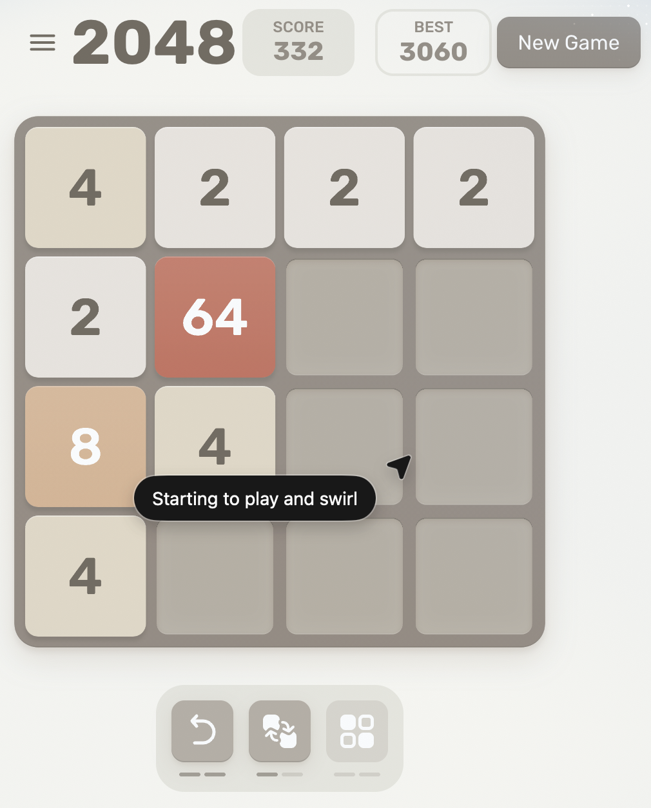
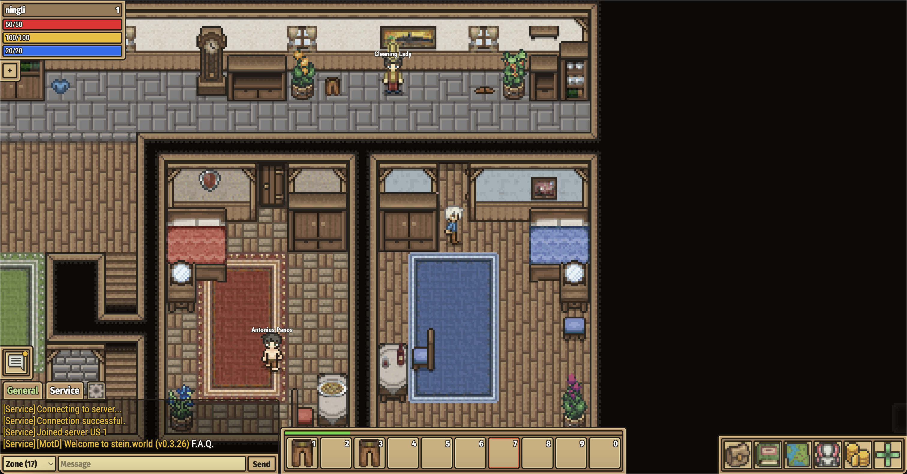

Videos
Game Screenshots




BibTeX
@misc{zhang2025agentconquerwebexploring,
title={Can Agent Conquer Web? Exploring the Frontiers of ChatGPT Atlas Agent in Web Games},
author={Jingran Zhang and Ning Li and Justin Cui},
year={2025},
eprint={2510.26298},
archivePrefix={arXiv},
primaryClass={cs.CL},
url={https://arxiv.org/abs/2510.26298},
}
}
Acknowledgements
This project page design was adapted from Nerfies and self-forcing.github.io.